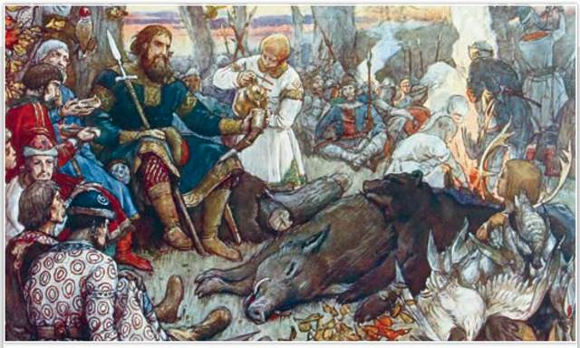
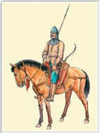
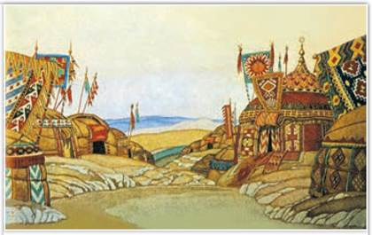
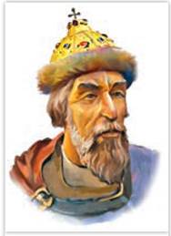
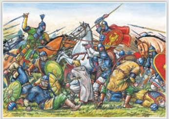
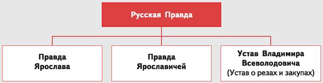
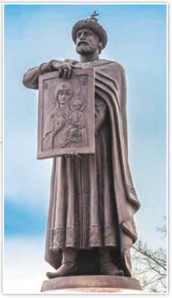

Отдых князя Владимира Мономаха после охоты. Художник В. Васнецов. 1895 г.
Как художник подчеркнул силу и величие князя?
РОССИЯ
МИР
1. Половецкие набеги 1068 и 1093 гг. После разгрома печенегов степи Восточной Европы заняли тюркоязычные кочевники — кипчаки. На Руси кипчаков называли половцами, а территорию их расселения — Половецкой степью. Пока князья воевали друг с другом, степняки разоряли и грабили Южную Русь. Они жгли города и сёла, угоняли людей и скот, продавали пленников на невольничьих рынках. Половецкие отряды действовали слаженно и умело, в то время как русские дружины всё больше ослабевали от княжеских усобиц.
В 1068 г. в сражении на реке Альте половцы разбили Ярославичей и подошли к Киеву. В городе стихийно собралось вече. «Дай нам оружие и коней!» — потребовали киевляне от князя Изяслава, но он отказал им. Тогда горожане разгромили княжеский двор. Изяслав бежал в Польшу. На киевском престоле оказался полоцкий князь Всеслав. Но Изяслав вернулся в столицу с польским войском и изгнал Всеслава.

Половец на коне

Половецкий стан. Художник И. Билибин. Государственный Русский музей. Санкт-Петербург
Летописцы называли половцев «поганые», то есть не христиане, язычники. Свои жилища (кибитки) половцы перевозили на повозках, запряжённых лошадьми. На длительных стоянках кибитки устанавливались на земле.

Владимир Мономах
Изяслав княжил в Киеве в 1054—1078 гг. (с перерывами). Ни он, ни отнявший у него престол Святослав (1073—1076) не сумели остановить половцев. Не преуспел в этом и их брат Всеволод (1078—1093). Любил он книги, знал пять иностранных языков, но талантом военачальника отмечен не был. После Всеволода киевский престол по праву старшего в роду занял сын Изяслава Святополк (1093—1113). Имел он небольшую дружину, тем не менее горел желанием нанести поражение половцам. Однако лучшим русским воеводой в то время был сын Всеволода Владимир Мономах.
Любопытные детали. Владимира Всеволодовича уже при жизни называли Мономахом, так как его дедом по матери был византийский император Константин IX Мономах. По сути Мономах — это не прозвище, а родовое имя матери князя. Императоров Византии считали самыми титулованными монархами Европы, и быть их родственником было почётно. Такое родство поднимало не только личный авторитет правителя, но и престиж его державы.
Напрасно Владимир Мономах отговаривал Святополка от обострения отношений с половцами. В 1093 г. Святополк двинул на кипчаков своё войско, дружины Мономаха и его брата Ростислава. На правом берегу распухшей от половодья реки Стугны половцы нанесли русским сокрушительное поражение.
2. Перелом в борьбе с половцами. Владимир Мономах стал главным организатором отпора половцам. Он призывал князей объединить усилия для защиты Русской земли. В 1095 г. половцы подошли к Переяславлю, требуя дани. Владимир Мономах вступил в переговоры, отдав своего сына-подростка Святослава в заложники. Владимир держал совет с дружиной. Воеводы сказали, что половцы никогда не соблюдают договоры, и предложили убить послов. В горнице, где пировали степняки, в потолке имелся люк, откуда можно было перестрелять их из луков. Владимир послушал дружину. Послы были убиты, половецкое войско разгромлено, а княжича Святослава дружинники вернули отцу.
В 1096 г. в битве на Трубеже Владимир Мономах в союзе с великим князем Святополком Изяславичем разбили половцев. Степняки пришли на Русь поддержать противника Мономаха князя Олега Святославича, получившего прозвище Гориславич за привычку привлекать на свою сторону половцев в княжеских усобицах.
В 1054 г. произошёл раскол христианской церкви на западную католическую и восточную православную. В жизни мирян на Руси церковный раскол пока не чувствовался. На Руси знали о походе
ТОЧКА ЗРЕНИЯ
Из книги историка В. Каргалова «Русь и кочевники»
Владимир Мономах давно понял, что в войне с извечными врагами Руси — кочевниками нельзя придерживаться оборонительной тактики, нельзя отсиживаться за валами и засеками, за стенами крепостей <...> Необходимо было не преследовать отступающего... врага, а предупреждать его, громить вдали от русских земель. <...> И ещё одну неожиданность приготовил Владимир Мономах своим врагам. Раньше в полевых сражениях с половцами участвовали главным образом конные дружины... Половецким атакам князь решил противопоставить глубокий строй пеших воинов, прикрытых большими щитами, вооружённых длинными копьями. Ощетинившийся копьями сомкнутый строй пешцев остановит яростные атаки половецких наездников, а конница довершит разгром.

Сражение князей с половцами
крестоносцев в Святую землю. Под знаменем борьбы с язычниками прошёл и «крестовый» поход Мономаха на половцев. Армию сопровождало духовенство. Впереди войска священники несли иконы. Решающее сражение произошло 27 марта 1111 г. на реке Сальнице, притоке Дона. Победа осталась за русскими. Ранее пала столица половцев Шарукань (находилась на месте современного Харькова).
3. Киевское восстание 1113 г. Великий князь Святополк Изяславич (в крещении Михаил), как и его предшественники, стремился украсить Киев. Он построил храм архангела Михаила, где впервые на Руси появились золотые купола, отчего и собор называли Михайловским Златоверхим. Святополк опекал Киево-Печерский монастырь. Инок этой обители Нестор по заказу Святополка стал составлять летопись «Повесть временных лет». О Святополке Изяславиче сообщается, что он был скуп и сребролюбив, имел отношение к спекуляции солью и покровительствовал тем, кто давал деньги в долг под проценты. Их называли ростовщиками. Человек, взявший в долг 1 гривну, должен был вернуть ростовщику 2 или 3 гривны. Многие киевляне с семьями оказались в рабстве, не сумев погасить долги.
После смерти Святополка II в апреле 1113 г. в Киеве начался бунт. Холопы и закупы перебили ростовщиков, потом стали грабить княжьих людей, разметали двор киевского боярина Путяты Вышатича. Большая часть горожан решила звать на великокняжеский стол 60-летнего Владимира Всеволодовича: «Если не придёшь, — говорили ему гонцы, — много зла будет, и княгиню Святополкову, и бояр, и монастыри ограбят!»
4. Последние годы политического единства Руси. Владимир Мономах (1113—1125) сначала отказался от киевского престола, но потом въехал в город. Он успокоил народ, приняв в 1113 г. Устав о резах и закупах, который дополнил Русскую Правду. Резами на Руси называли проценты по долгу. Устав запрещал брать с должника по резам больше пятидесяти процентов и обращать его в холопа. Теперь нельзя было удерживать закупа, если он шёл искать средства для уплаты долга.
В великое княжение Владимира Мономаха почти прекратились усобицы. Сын Святополка II Ярослав выступил против великого князя, но был разбит. Его Волынь отошла старшим сыновьям Владимира Всеволодовича. После этого почти три четверти русских земель контролировались Мономахом, его детьми и внуками.
Внутреннее и внешнее спокойствие Руси способствовало расцвету хозяйства. Пахарь не опасался неожиданного набега, городской мастер посвящал себя мирному ремеслу, развивалась торговля. Появилось много новых городов. По указу великого князя в разных землях Руси основывали города, населяли их пленниками и беженцами с юга. Старые города, особенно Киев, тоже росли и богатели.

Составные части Русской Правды
Назовите особенности каждой части Русской Правды.

Памятник Владимиру Мономаху. Скульптор И. Чумаков. 2017 г. Смоленск
Владимир получил смоленское княжение в 1077 г. Позднее он заложил в Смоленске первый каменный собор — в честь Успения Божией Матери и поместил в нём икону «Одигитрия» — лик Богоматери с Младенцем Христом. По одной из версий, эта чудотворная икона досталась Владимиру от его матери. На памятнике князь держит икону в руках.
Владимир Мономах прославился не только как успешный князь-воин, дипломат и правитель, но и как талантливый автор литературных сочинений. Одно из них — «Поучение» детям.
После смерти Владимира Мономаха киевский престол перешёл его сыну Мстиславу Великому (1125—1132). Мстислав сумел продолжить курс своего отца. Он нанёс несколько поражений половцам и оказался последним киевским князем, при котором сохранялось единство Руси, но правление его было недолгим.
ПОДВЕДЁМ ИТОГИ
Вторая половина XI и начало XII в. были отмечены борьбой Руси с половцами. Объединение князей перед лицом опасности и полководческий талант Владимира Мономаха помогли достигнуть перелома в противостоянии с половцами. С политикой Владимира Мономаха и его сына Мстислава Великого связано сохранение единства Руси.
Вопросы и задания
|
Даты и места сражений |
Участники |
Результат |
Работаем с хронологией
Расположите в хронологической последовательности события:
Работаем с источником
Прочитайте фрагмент из «Поучения» Владимира Мономаха.
Ни правого, ни виновного не убивайте и не повелевайте убить его; если и будет повинен смерти, то не губите никакой христианской души.
...Старых чтите, как отца, а молодых, как братьев. В дому своём не ленитесь... Куда же пойдёте и где остановитесь, напоите и накормите нищего, более же всего чтите гостя, откуда бы к вам ни пришёл... Больного навестите, покойника проводите, ибо все мы смертны. Не пропустите человека, не поприветствовав его, и доброе слово ему молвите. Что умеете хорошего, то не забывайте, а чего не умеете, тому учитесь. <...> Что надлежало делать отроку моему, то сам делал — на войне и на охотах, ночью и днём, в жару и стужу, не давая себе покоя. На посадников не полагаясь... сам делал, что было надо; весь распорядок и в доме у себя также сам устанавливал...
Если не будете помнить это, то чаще перечитывайте: и мне не будет стыдно, и вам будет хорошо.
Что умеете хорошего, то не забывайте, а чего не умеете, тому учитесь — как отец мой, дома сидя, знал пять языков, оттого и честь от других стран. Леность ведь всему мать: что кто умеет, то забудет, а чего не умеет, тому не научится. Добро же творя, не ленитесь ни на что хорошее, прежде всего к церкви: пусть не застанет вас солнце в постели. Так поступал отец мой блаженный и все добрые мужи совершенные.
Работаем с понятиями
Кто такие ростовщики? Какой закон был связан с их деятельностью? В чём заключались основные положения этого закона?
ДОПОЛНИТЕЛЬНЫЕ МАТЕРИАЛЫ
«УЧИТЕЛЮ И УЧЕНИКУ».
Материалы к параграфу на портале «История.РФ».